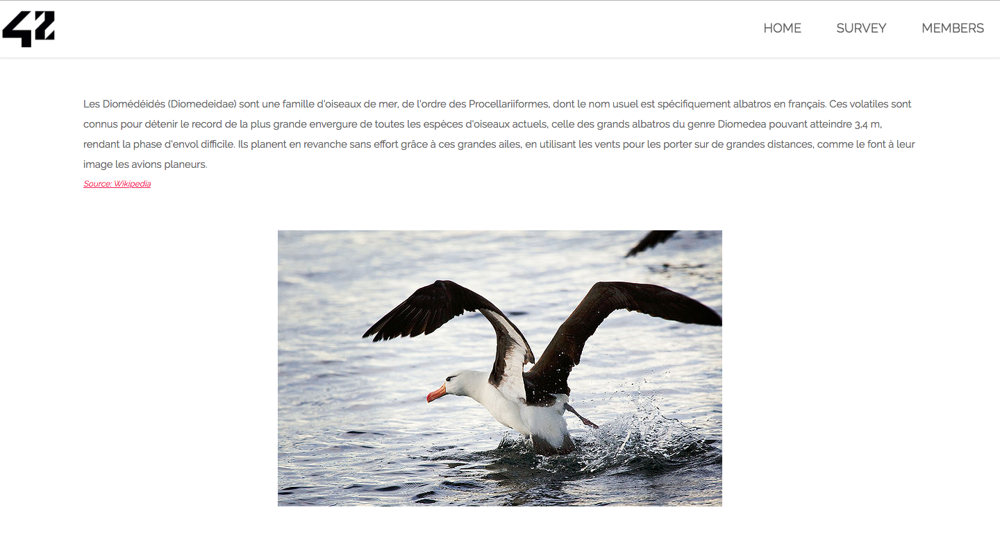
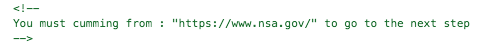
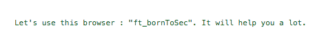
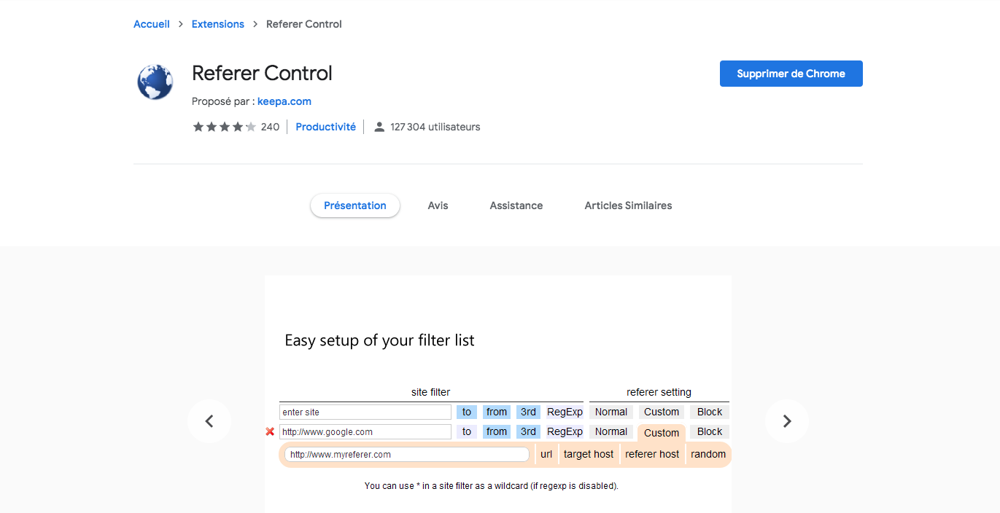
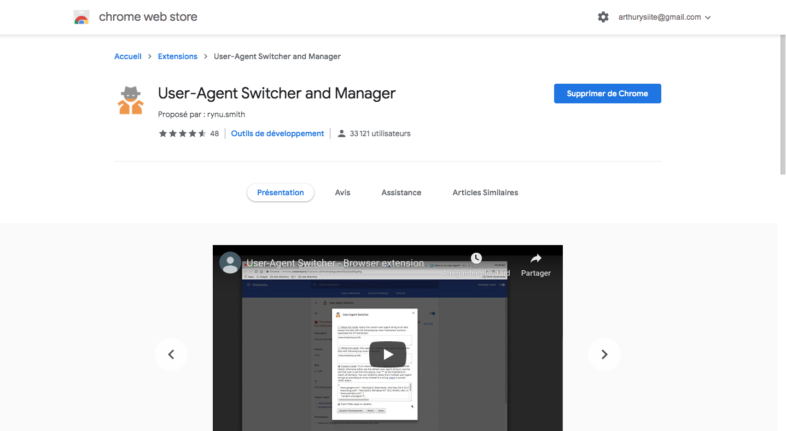
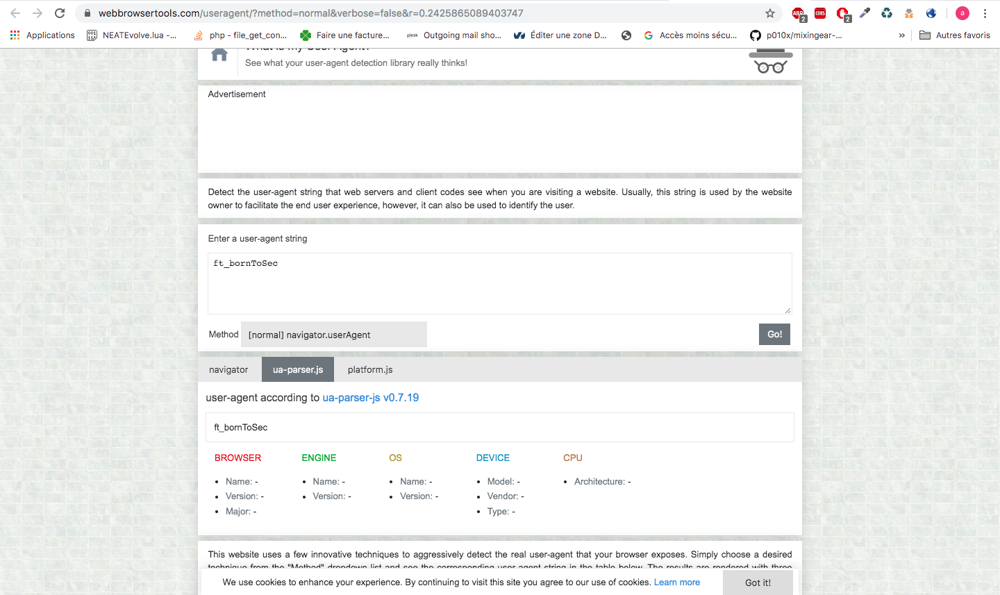
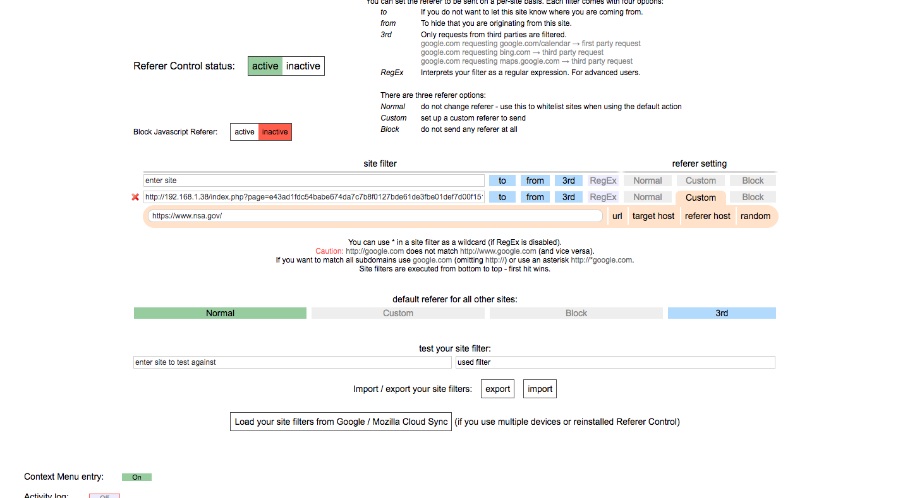
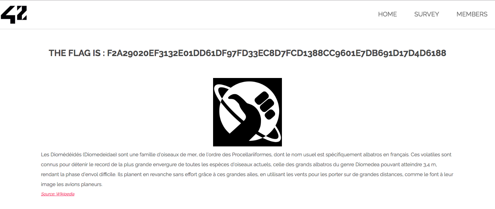
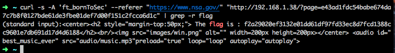

On vas sur la page e43ad1fdc54babe674da7c7b8f0127bde61de3fbe01def7d00f151c2fcca6d1c du site
Si on inspect l'element, on peut voir marque 1 information importante parmis tout le code
Et en decendant tout en bas on peut en voir une deuxieme
Installer l'extension chrome referer control
Installer l'extension chrome User-agent: Switcherand manager
Configurer notre user-agent
Configuer notre referer control
retourner sur la page e43ad1fdc54babe674da7c7b8f0127bde61de3fbe01def7d00f151c2fcca6d1c du site
Faire la meme chose avec curl
Faire un system avec les sessions au lieu de devoir a chaque fois modifier son navigateur